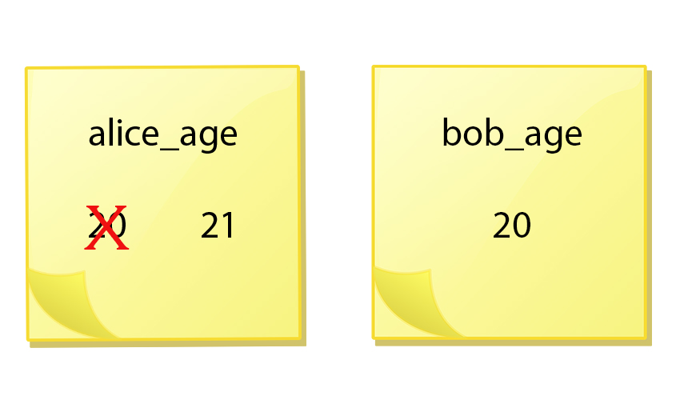

The Basics: Variables and Printing¶
This notebook is based on materials kindly provided by the IN1900 team.
Programming is a way of telling the computer what to do. Computer programs are a kind of recipe, like cooking or knitting recipes. However, cooking recipes can sometimes be vague or imprecise. For example, an instruction could be “add 4-5 eggs” or “bake for 25-30 minutes till done”. Because humans have discretion, we can make sense of such vague instructions. Unfortunately, computers don’t have discretion. Therefore, computer programs must be both precise and correct.
Python as a Calculator¶
You can do simple math like this:
\(a + b\) in Python :
a + b\(a - b\) in Python :
a - b\(a \times b\) in Python :
a * b\(\frac{a}{b}\) in Python :
a / b\(a^b\) in Python :
a**b\(3.2 \times 10^7\) in Python :
3.2e7
You’ll need to use parenthesis for larger expressions. See examples below.
1+2
3
4-3
1
1/3
1/(5*2)
0.1
Printing to the Screen (Terminal)¶
As we can see above, Jupyter Notebook only displays the value of the final expression in a cell. If you want to see the value of other expressions, you need to print them to the screen.
In Python, you can use the function print() to display things on the screen.
Put the item to be printed inside the parentheses.
print(2)
2
You can print multiple items separated by commas.
print(0, 1, 2, 3, 4, 5, 6, 7, 8, 9, 10)
0 1 2 3 4 5 6 7 8 9 10
If you want to print text, it must be in quotes, like below.
print("This message will be printed")
This message will be printed
Variables¶
In the examples above, the computer “forgets” the information as soon as it has been printed. We need some way to store information in our program. This is what variables are for. Variables are like handles we use to retrieve information.
In Python, variables can be declared as shown in the code snippet below.
a = 2
print("a =", a)
b = a + 1
print("b =", b)
a = a + 3
print("a =", a)
print("b =", b)
a = 2
b = 3
a = 5
b = 3
Note that the left side is assigned the value of the right side. Contrary to math, it is therefore “allowed” to, for example, set variables to themselves plus something, as shown above.
Note that b does not change value when you change a after declaring b.
Remember that Python reads the file from the top line downwards. Therefore, you must declare a before b in the code snippet above.
Variable Names¶
Python doesn’t really care which variable names you use. Variable names can contain:
all letters, both uppercase and lowercase, found in the English alphabet.
underscore: _
numbers, but a number cannot be the first character of the name
no other characters are allowed in variable names
These rules are illustrated below, with a terribly long variable name:
VARIABLE_NAME_with_1_2_3 = 0
Use descriptive names¶
As mentioned, Python doesn’t care what variable names you use, but we humans do. You should create descriptive variable names to increase the readability of your code. Variable names should not be too long, but should be descriptive enough for others (or you in the future) to understand what the variable is. Once the variable is declared, it can be used!
pi = 3.14
print("pi =", pi)
pi = 3.14
Exercise: Variable Names ¶
Why does the code below yield an error? Fix the code such that the name is printed.
name = "Arthur"
print(Name)
---------------------------------------------------------------------------
NameError Traceback (most recent call last)
/tmp/ipykernel_2290/250693900.py in <module>
1 name = "Arthur"
----> 2 print(Name)
NameError: name 'Name' is not defined
Variables as Sticky Notes¶
Python variables are independent from each other. Let’s define two variables. Alice is 20 years old, and her classmate Bob is the same age:
alice_age = 20
bob_age = alice_age
Then it’s Alice’s birthday. Now, what’s the value of bob_age?
alice_age = 21
print(bob_age)

The variable bob_age is independent from alice_age, even though it was initially assigned the value from alice_age. This is just the way variables are defined in Python. It would be perfectly fine to have another kind of variable where the two variables are connected, but this is not how standard python variables work.
Exercise: Understanding Variables ¶
Go through the following lines of code step-by-step. What are the values of the different variables after each step? You can check your answers by executing each line in Python.
length = 5
width = 3.5
length = length * 2
width = width - 1.5
print(length, width)
Exercise: Using Variables to Perform Simple Calculations¶
Alice weighs 65 kg, and Bob weighs 70 kg.
Create variables containing these data. Try to think of descriptive variable names.
Create a new variable containing their total weight, calculated from the two variables from 1.
Charlie weighs 85 kg. Calculate Alice, Bob and Charlie’s average weight.
# Your Solution
Data types¶
Variables can be of different types besides whole numbers (integers).
We will look at some of the types in Python. You can use the function type()to find the type of a variable.
Integers (Whole Numbers)¶
In Python a whole number is called an integer, but when programming we use the abbreviation int.
print(type(2))
Float (Decimal Numbers)¶
A decimal number is called a floating point number, but when programming it is abbreviated float.
print(type(1.2))
String (Text)¶
In Python, text is called String, abbreviated str.
Did you wonder why we used quotes when printing text? If we don’t quote text, python will think the string is a variable name.
The quotes make it clear that text is not a variable name, but a String.
print(type("spam"))
Below, we try to print a string that is not enclosed in quotes.
Therefore, python thinks that we are trying to use the variable name spam.
We get an error message stating that python cannot find this variable:
NameError: name 'spam' is not defined
print(spam)
Exercise: Datatypes¶
Can you change the variables below, so that all three contains the value two, but with different datatypes? The output should be the title of each exercise.
a) <class ‘int’> ¶
Let the variable int_2 be an integer with the value two.
int_2 = ?
print(type(int_2))
b) <class ‘float’> ¶
Let the variable float_2 be a decimal number with the value two.
float_2 = ?
print(type(float_2))
c) <class ‘str’> ¶
Let the variable str_2 be the text containing the number two. (Not “two”).
str_2 = ?
print(type(str_2))
Importing Libraries/Modules¶
A module is a collection of functions that someone has written. A library is a collection of modules.
There are innumerable python libraries available for performing diverse tasks.
For example, Python comes with a built-in module called math, which contains variables and functions for doing math.
The statement import <module_name>, makes the module available to use in your program.
To use a function in the module, you write
<module_name>.<function_name>
as demonstrated below.
import time
print(time.time())
If you are only using a few functions from a module, you can import those functions directly. You do this with the from statement:
from <module_name> import <function_name_1>, <function_name_2>
If you import multiple functions, separate them with a comma. See an example below.
from time import time, ctime
t = ctime(time())
print(t)
Exercise: Importing a Module ¶
We will use the library datetime to print out which date it is today. The library contains an object, called date, which contains a function today. The code for calling the function today to extract and print out todays date is given below. This code will not work, as date is not imported.
Import date from the module datetime .
# Import the Module on the Line Below:
print("date today: ", date.today())
Commenting Code¶
Comments can make your code easier to understand. You can use a # character to start a single line comment.
To write a comment consisting of multiple lines, you use three quotes ''' before and after the comment.
# This is how to make a comment on a single line
a = 13 # Can be used on the right side of your code
'''
This is how to
comment over
several
lines
'''
Key Points¶
Use
variable = valueto assign a value to the variable to store it for later useUse
print(something)to show the value ofsomething.Python variables can be strings, integers or floats.
Python variables are independent from each other